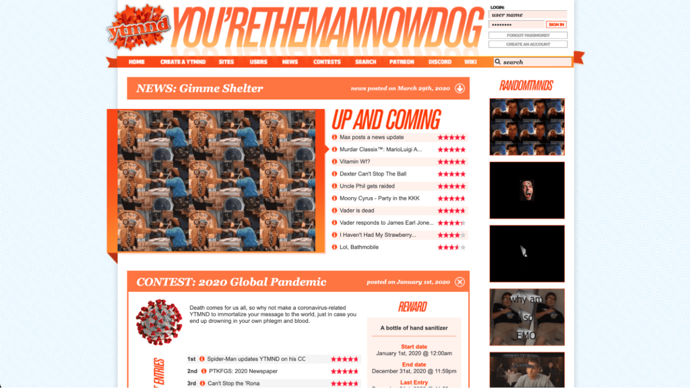
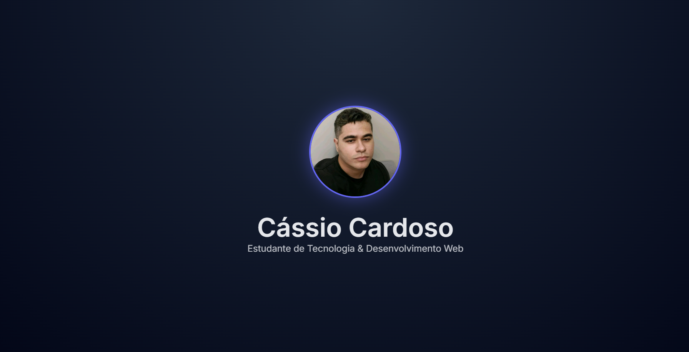

Sobre mim
Sou estudante apaixonado por tecnologia e design. Atualmente estou focado no aprendizado de desenvolvimento web, criando projetos práticos para consolidar meus conhecimentos em HTML, CSS e JavaScript.
Formação Acadêmica
-
Curso Técnico / Graduação
Instituição – Em andamento UNIT - Nutrição (em andamento) JovemTech - Formação em devjunior (em andamento) -
Cursos Complementares
HTML, CSS, Lógica de Programação
Projetos

Site Pessoal
Projeto desenvolvido para praticar HTML semântico e CSS moderno.
HTML • CSS

Landing Page
Layout responsivo com foco em minimalismo e usabilidade.
HTML • CSSHabilidades
HTML5
CSS3
Responsividade
Lógica
Git (básico)
Objetivos
Busco oportunidades de estágio ou projetos acadêmicos que me permitam evoluir tecnicamente, adquirir experiência prática e crescer na área de tecnologia.